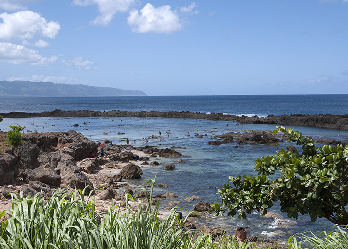
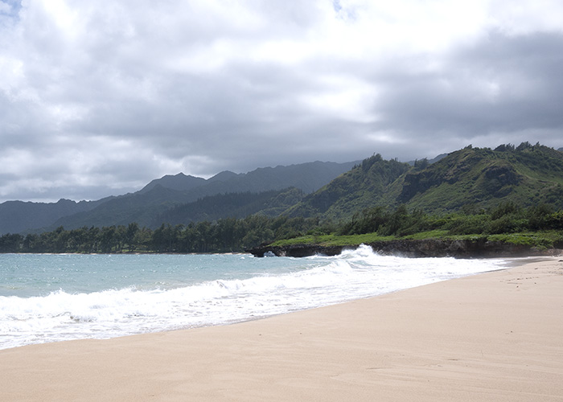

Diamond Head
Diamond Head is a volcanic ash cone on O'ahu known to Hawaiians as Lē'ahi. It is estimated to be about 400,000 - 500,000 years old. The interior was home to Fort Ruger, the first U.S. military reservation in Hawaii. Diamond Head was declared a National Natural Landmark in 1968.
We took a bus from Waikiki to get to the Diamond Head trailhead. The hike itself was relatively easy (1.5 miles round trip), save for some parts with sudden elevation gains. It took us about 40 minutes at a leisurely pace to make it to the top, with a lot of stops for photos along the way.
The view was beautifull looking inwards.

As well as outwards!
The Diamond Head Lighthouse situated right next to Diamond Head's slopes. It is a U.S. Coast Guard facility that was built in 1917 and was listed on the National Register of Historic Places in 1980.
Hanauma Bay
Hanauma Bay is located on the southeast coast of O'ahu. It is both a Nature Preserve and a Marine Life Conservation District. About 400 species of fish are known to inhabit the bay, as well as an abundance of Green Sea Turtles (known in Hawaiian as 'Honu'). Hanauma Bay is a nursery ground for immature turtles.
Snorkeling in Hanauma Bay was an absolute dream! My husband and I keep a saltwater fish aquarium at home, and it was a lot of fun recognizing many of the fish we came across. There was a particularly curious Christmas Wrasse that followed us for a while.
Dole Plantation
In 1899, a young Massachusetts native named James Dole used his savings and moved to Honolulu. He eventually purchased a 64-acre homestead in O'ahu's central plains and eventually chose to grow pineapples. The business grew rapidly as Dole launched ad campaigns in magazines, invested in modern machinery to process the crops, and obtained significant financial backing in order to purchase more land to farm. By 1950, a small fruit stand was erected so that everyone could savor the plantation's tasty fruit. Then, in 1989, a plantation-style home was built to serve as a living museum to James Dole's work and to welcome pineapple lovers from around the globe.

On the grounds, there were some beautiful eucalyptus trees which I eventually learned are called Rainbow Eucalyptus.

Honestly, the only reason we stopped by the Dole Plantation was for some delicious Dole Whip!!
North Shore
The North Shore refers to the north-facing coastal area of O'ahu between Ka'ena Point and Kahuku. The largest settlement is Hale'iwa. The area is best known for its massive waves that attract surfers from around the globe, and is considered the surfing mecca of the world.
The vibe in the North Shore was definitely a lot more chill than in the more touristy Waikiki. It was relatively more serene.
Nu'uanu Pali Lookout
Nu'uanu Pali is a section of the windward cliff of the Ko'olau mountain located at the head of Nu'uanu Valley. It has a panoramic view of the windward (northeast) coast of O'ahu. It was the site of the Battle of Nu'uanu, one of the bloodiest battles in Hawaiian history, in which Kamehameha I conquered the island of O'ahu, bringing it under his rule. There are many superstitions and legends about this area.
The drive to the lookout point was almost as beautiful as the panoramic view the Lookout offered. The area is usually very windy, and that day was no different. There were also many, MANY feral chickens living in the area!

Kailua Bay
Kailua lies on the windward coast of Kailua Bay. In the Hawaiian language, kailua means "two seas" or "two currents", so named because of the two lagoons in the district, or the two currents which run through Kailua Bay. It is a primarily residential area.
One of my favorite activities during the trip, my husband and I went sea-kayaking to the two protected seabird sanctuaries (Mokulua).